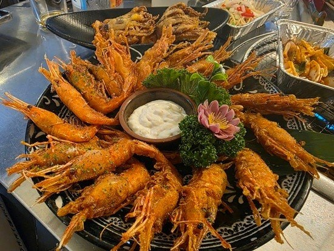
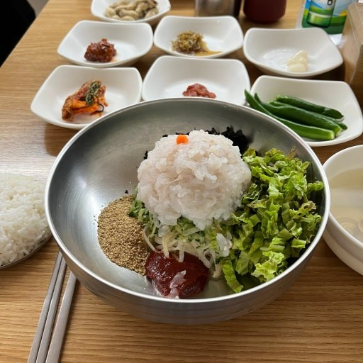
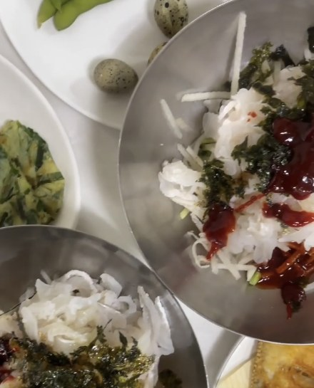
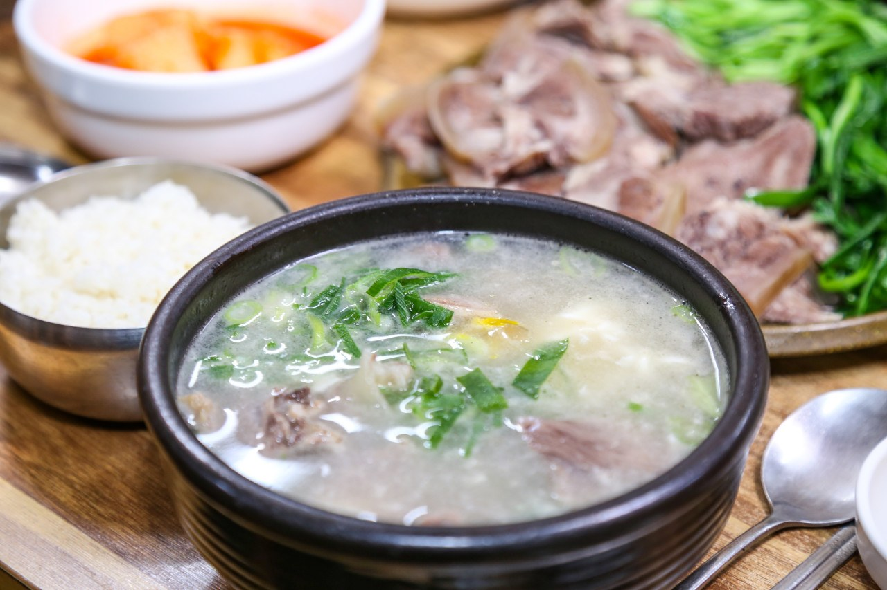
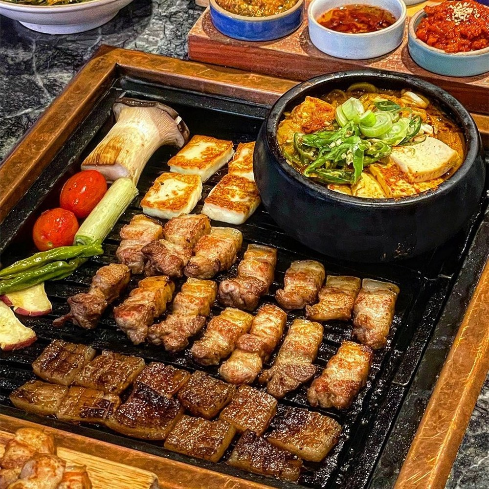

POHANG FOOD MAP
POHANG FOOD MAP
POHANG FOOD MAP
POHANG FOOD MAP
포항에서 든든하게 먹기 좋은 한식, 해산물, 고기 맛집을 모았습니다.

대게와 해산물을 함께 즐기기 좋은 영일대 해산물 맛집입니다.
📍 경북 포항시 북구 해안로 107

영일대 바다 근처에서 조개구이를 즐기기 좋은 식당입니다.
📍 경북 포항시 북구 삼호로 254 1층

포항 바다와 잘 어울리는 물회와 회 메뉴가 유명한 곳입니다.
📍 경북 포항시 북구 해안로 217-1

죽도시장 안에서 물회와 회덮밥을 찾을 때 보기 좋은 회식당입니다.
📍 경북 포항시 북구 죽도시장14길 3

참가자미 물회와 회 메뉴로 알려진 포항 횟집입니다.
📍 경북 포항시 북구 여남포길 57

죽도시장 근처에서 든든한 곰탕 한 끼를 먹기 좋은 식당입니다.
📍 경북 포항시 북구 죽도시장3길 9-16

정갈한 한식 정식과 돌솥밥을 먹기 좋은 포항 한식집입니다.
📍 경북 포항시 남구 대이로189번길 5-2

영일대 근처에서 고기 메뉴를 찾을 때 가기 좋은 고기 맛집입니다.
📍 경북 포항시 북구 삼호로 220-1 1층